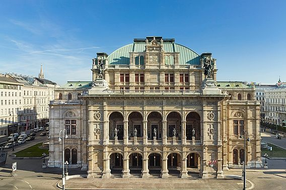

Austrian Culture
Austrian culture has been influenced by its past and present neighbours: Germany, Hungary, Poland, Italy, and Bohemia.
Music
Main article: Music of Austria See also: List of Austrians in music and Music of Vienna Vienna, the capital city of the 2nd Republic of Austria had long been an important centre of musical innovation. Composers of the 18th and 19th centuries were drawn to the city by the patronage of the Nobility, and made Vienna the European one of the capitals of classical music. Wolfgang Amadeus Mozart, Ludwig van Beethoven, and Johann Strauss, Jr., among others, were associated with the city. During the Baroque period, Czech and Hungarian-Székely folk forms influenced Austrian music. Vienna's status began its rise as a cultural center in the early 16th century, and was focused around instruments including the lute.